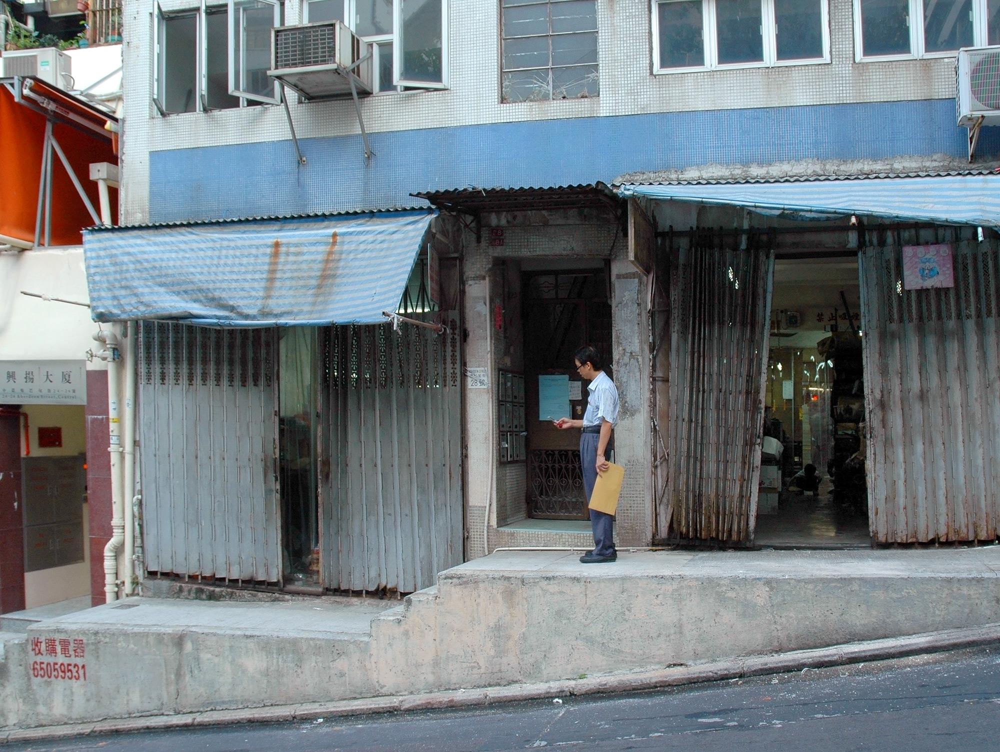
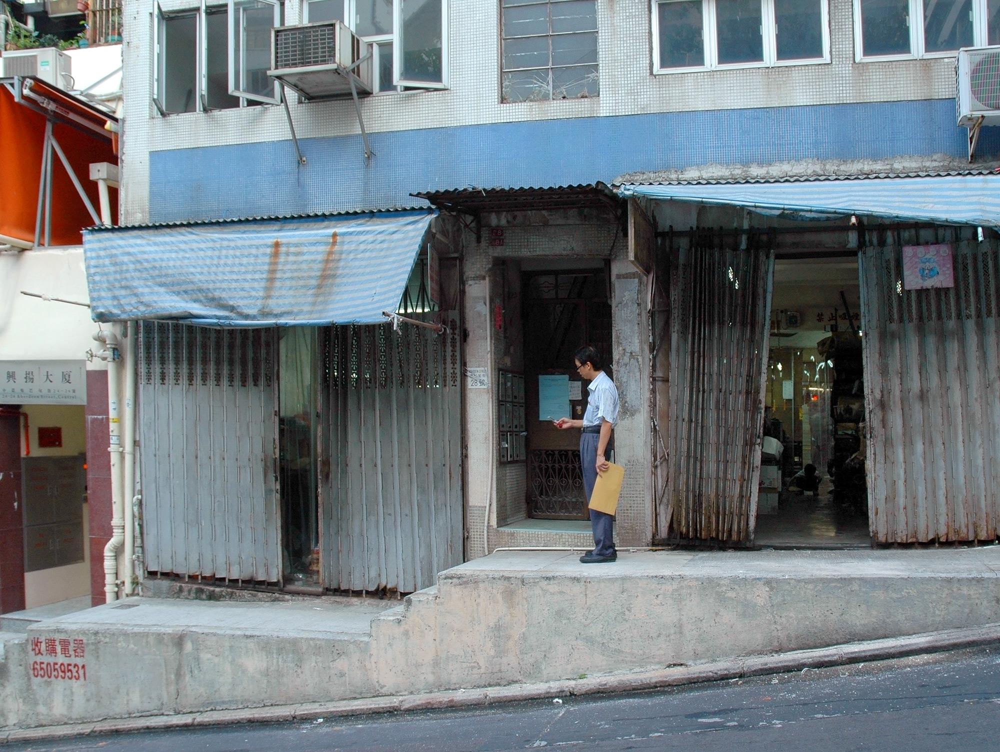

Passages III
Passages III is the third installment of a photograph series, which catalogues scenes from travel in China and Hong Kong, to family homes in Taiwan and quarantine in New York City. Inspired by Chinese inhabitants carrying out their daily lives, the artist discreetly records their presence as a candid travelogue. In addition to her family's own diasporic journey, the photographic series also reveals the artist's interest in oculi and their ability to both shape and direct light as it moves from one space into another. Passages III presents an evolving perspective on transnational identity across international places with deeply complicated and ever-changing identity.

 
Back to top

Back to top